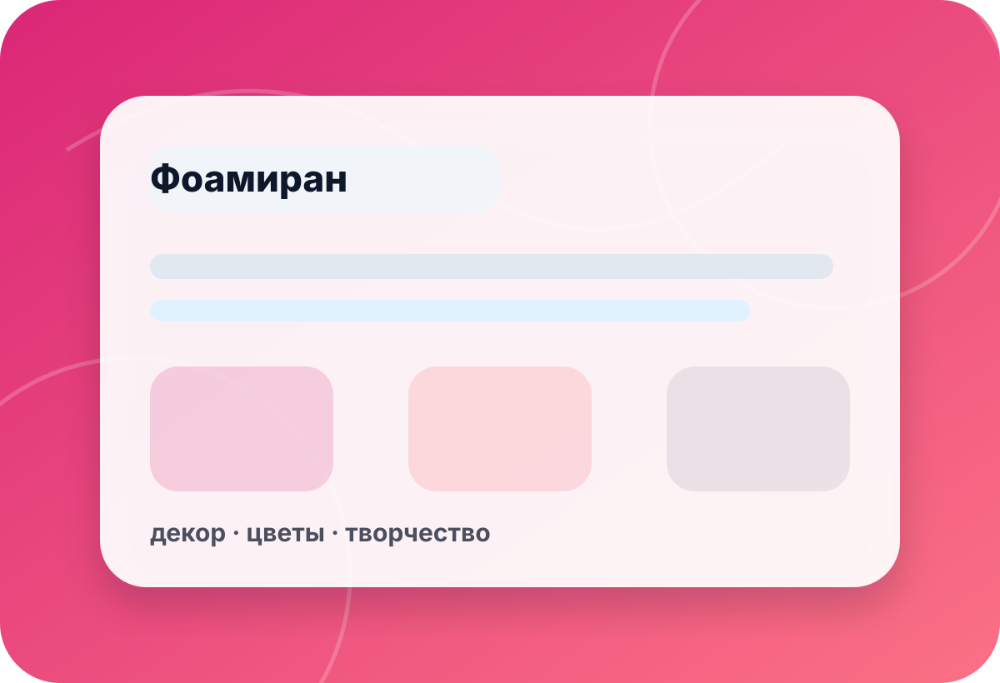
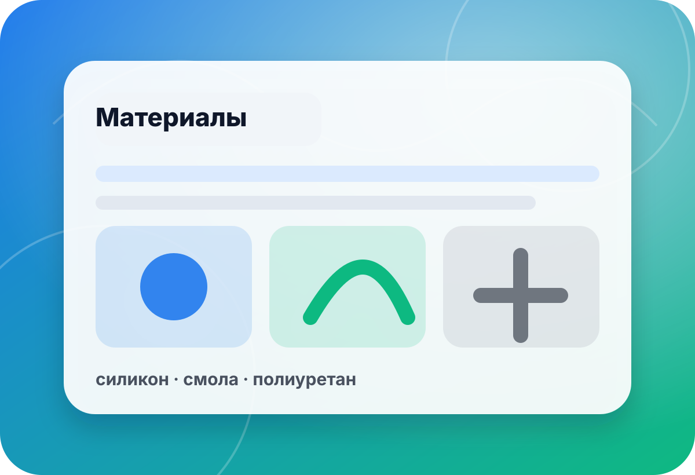

категория · preview
Иранский фоамиран — направление для ручного уточнения
Preview-страница помогает подготовить запрос по иранскому фоамирану без обещаний цены, наличия или палитры. Цвет, толщина, формат листа, партия и получение уточняются вручную через контактный канал.
- цены
- нет
- палитра
- уточнить
- оплата
- выкл.
- preview
- noindex

ориентиры
Как сформулировать запрос
Для фоамирана важны не только цвет, но и толщина, формат, партия оттенков и способ дальнейшей обработки.
без обещаний
Что уточняется перед ответом
Preview-категория не подключена к складу, палитре или онлайн-заказу.
Цвет и оттенок
Палитра и совпадение оттенков в партии проверяются отдельно.
- цвет
- оттенок
- партия

◎Формат и толщина
Для задачи важны размеры листа, толщина и способ формования.
- лист
- толщина
- нагрев
 ✦
✦Получение
Город, доставка и документы согласуются после проверки наличия.
- город
- доставка
- B2B
чек-лист
Что указать в запросе по иранскому фоамирану
Изделие
Опишите, для чего нужен материал и какая нужна пластичность.
Указать:декор · цветы · макет · основаПараметры
Уточните желаемый цвет, толщину и формат.
Указать:цвет · толщина · формат · оттенокКоличество
Для проверки партии нужно понимать количество листов и запас.
Указать:листы · партия · запас · аналогПолучение
Город, доставка и документы согласуются после проверки.
Указать:город · доставка · B2B · контактмини-бриф
Подготовьте запрос по иранскому фоамирану
Форма в preview не отправляет данные на сервер. Скопируйте текст и отправьте его по телефону или почте.